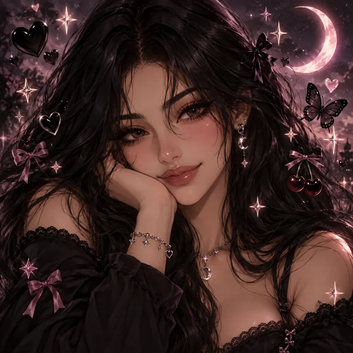

Worlds to get lost in
Junipurrr
A little lore.
A lot of emotional damage.
Character bots, tangled stories, and
whatever I’m currently cooking.
A note from Juni
with love & questionable judgment, Juni ♡Currently enabling this obsession
Pick a door. Get attached.
The collection
Different worlds.
Same unfortunate attachment issues.
Looking for the anime bots? They have their own folder →
Cricket checked under the furniture.
Nothing. Try another word or clear your filters.
Your next attachment is waiting over on DJAI.
Visit my profileA door into somewhere else
The worlds
Come for one person.
Stay for the entire universe.
A peek behind the curtain
rattling around in my brain like the DVD screen
Half-finished thoughts.
Worlds in the making.
Probably another document.
Scene requests · for plot purposes, obviously
make it
my problem
have a scene living in your head rent free? a conversation they absolutely need to have? a situation that would make everyone’s lives significantly worse?
tell me. unfortunately, i can probably be convinced.
Cricket · receptionyour proposal is important to us.
he is sitting on it.
requests are inspiration, not a guaranteed slot. i’ll pick up the ones that click with the characters and whatever my brain is currently cooperating with. please do not mistake my enthusiasm for a release date.
inbox opening soon
Cricket is still setting up the inbox. You can write an idea and keep a copy, but requests aren’t being sent yet.
place this gently on my desk ↗Player taking a moment? Use “Open in Spotify” to listen there.

The person behind the lore
Hi, I’m Juni.
Professional enabler of bad decisions.
Curator of expensive emotional damage.